There are many characters in the original Yu-Gi-Oh series, so while we won't be able to cover all of them, we will cover the main characters from the series.
Yugi Muto
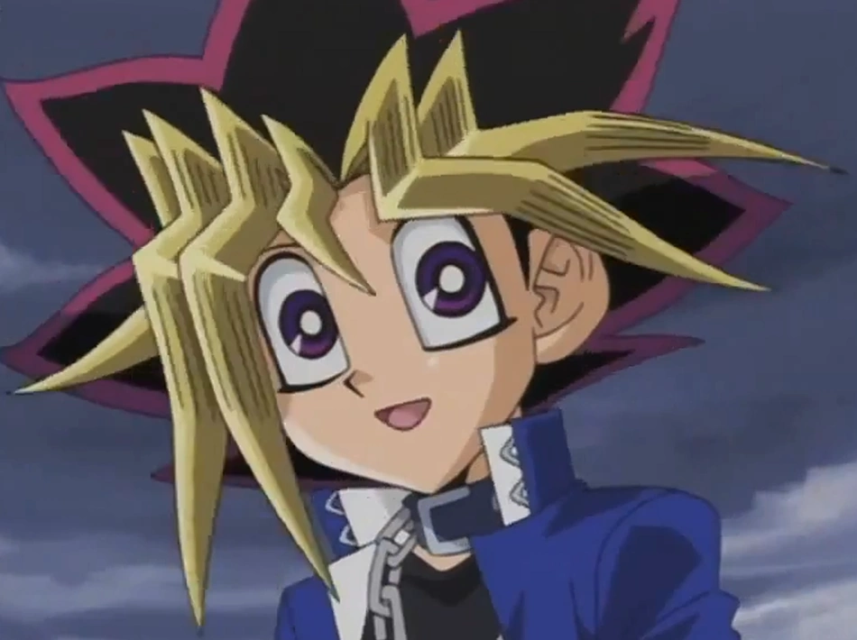Yugi Muto is the protagonist of the Yu-Gi-Oh! series. He is a kind-hearted, intelligent, and brave high school student with a passion for games, especially Duel Monsters. Yugi possesses an ancient Egyptian artifact known as the Millennium Puzzle, which houses the spirit of an ancient Pharaoh. Together, Yugi and the Pharaoh work together to solve various problems and challenges, using their combined skills and knowledge to overcome their opponents. Yugi is a skilled Duelist and is known for his unique and unpredictable strategies, often catching his opponents off-guard. He values his friendships and always tries to do the right thing, even when it is difficult.
Joey Wheeler
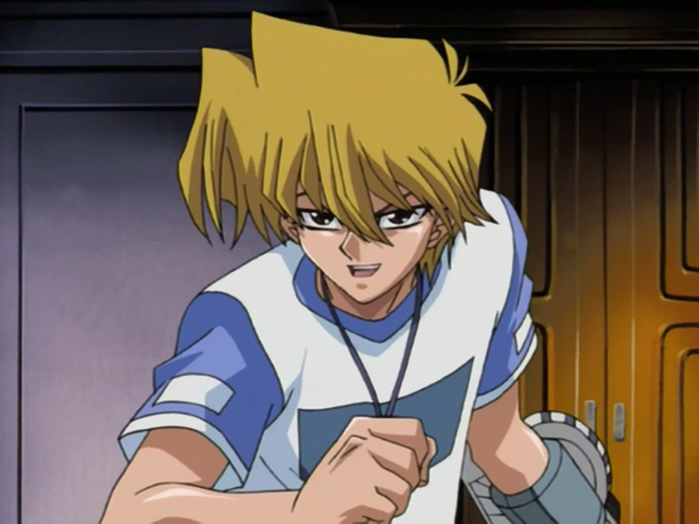Joey Wheeler is one of Yugi's closest friends and a frequent ally in the series. He is initially portrayed as a hot-headed and impulsive duelist with a strong sense of loyalty and determination. Joey comes from a less privileged background than his peers and is often driven by a desire to prove himself as a skilled duelist. Throughout the series, he undergoes significant character development and becomes more mature and strategic in his approach to dueling. Joey's signature card is the "Red-Eyes Black Dragon," which he relies on in many of his battles.
Tristan Taylor
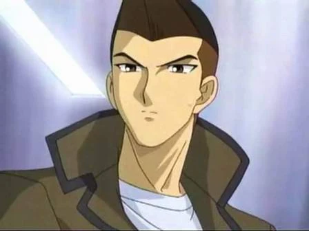Tristan is another of Yugi's friends and a member of the school's football team. Though he doesn't duel, he provides valuable support to Yugi and his friends.
Téa Gardner
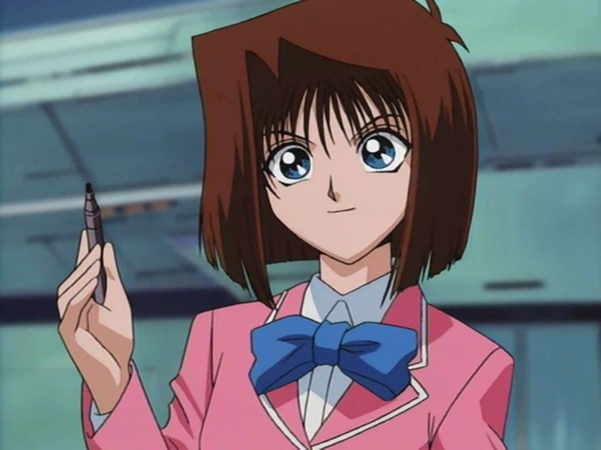Téa is Yugi's close friend and confidante. She doesn't duel, but provides emotional support to Yugi and his friends. She also has a deep interest in dance and wants to pursue it professionally.
Mai Valentine
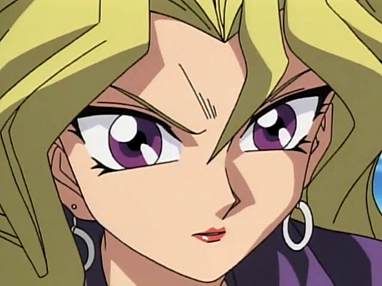Mai Valentine is a confident and skilled duelist who initially appears as an antagonist in the series, but later becomes an ally to the main characters. She is known for her Harpie Lady cards, which she uses to great effect in duels. Mai is also a professional duelist and competes in tournaments for money, using her winnings to fund her travels. Despite her tough exterior, Mai has a caring side and becomes a close friend to some of the main characters.
Mokuba (Kaiba)
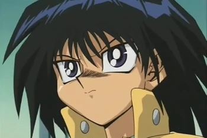Mokuba Kaiba is a recurring character in the Yu-Gi-Oh! series and the younger brother of Seto Kaiba. He is often seen as a loyal and supportive companion to his brother, as well as a skilled duelist in his own right. Despite his young age, Mokuba possesses a sharp mind and is highly capable in business and technology, playing a crucial role in his brother's company, KaibaCorp. Mokuba is also fiercely protective of his brother and is willing to do whatever it takes to help him achieve his goals. He is known for his outgoing and cheerful personality, often lightening the mood with his sense of humor and positive attitude.
Seto Kaiba
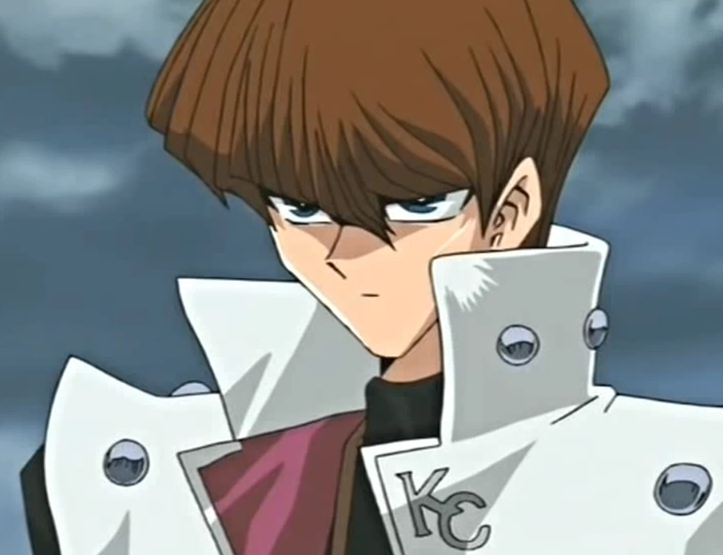Seto Kaiba is one of the main characters in the series and the CEO of KaibaCorp, a multinational gaming company. He is also a skilled duelist and is known for his use of powerful dragon-themed cards, including his signature Blue-Eyes White Dragon. Seto is a cold and aloof individual who is obsessed with defeating Yugi, whom he sees as his greatest rival. He is often depicted as ruthless in his business dealings, but he also has a deep loyalty to his younger brother, Mokuba. Seto is a complex character who is driven by his desire to prove himself and his company as the best in the world.
Bakura
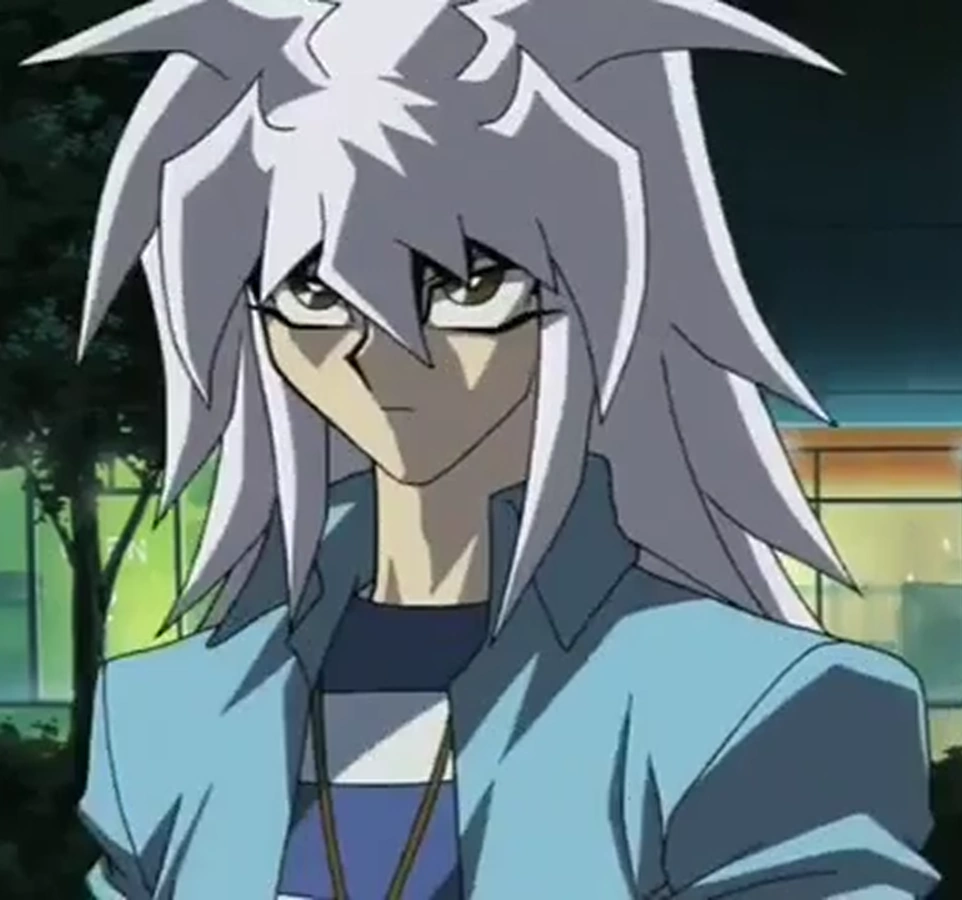Bakura is a recurring antagonist in the series who possesses the Millennium Ring. He is an ancient Egyptian spirit who has taken control of the body of Ryo Bakura, one of Yugi's classmates. Bakura is a skilled duelist and has a deck that focuses on the use of Fiend monsters. He is often depicted as quiet and reserved, but is also cunning and manipulative. Bakura's ultimate goal is to obtain all the Millennium Items so that he can use them to resurrect his ancient Egyptian past self, the powerful sorcerer Zorc Necrophades.
Maximilian Pegasus
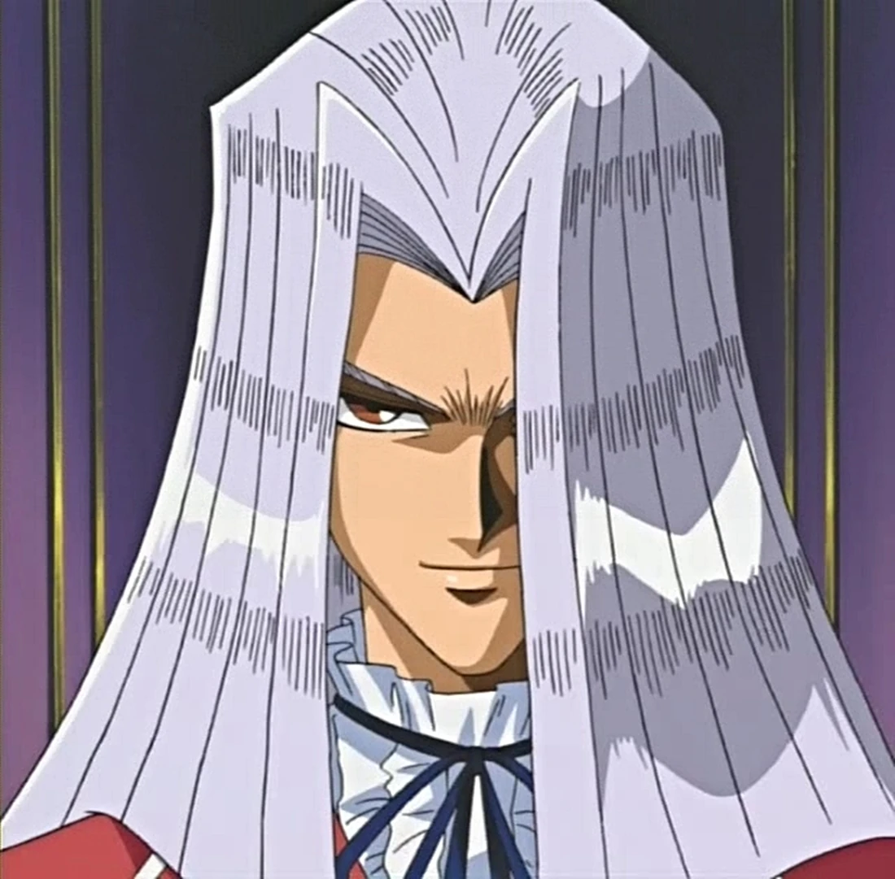Maximilian Pegasus, also known as Pegasus J. Crawford, is the main antagonist of the Duelist Kingdom arc in the series. He is the creator of the game Duel Monsters and the founder of Industrial Illusions, the company that produces the game. Pegasus possesses the Millennium Eye, which allows him to read minds and see into the future. He is a charismatic and charming individual, but also manipulative and ruthless when it comes to achieving his goals. Pegasus organized the Duelist Kingdom tournament to obtain the three Egyptian God Cards, which he believed would help him bring his deceased lover, Cecelia Pegasus, back to life.
Ishizu Ishtar
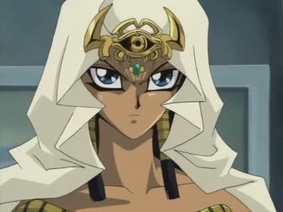Ishizu Ishtar is a prominent character in the Battle City arc of the series. She is a member of the Ishtar family and possesses the Millennium Necklace, which allows her to see glimpses of the future. Ishizu is the younger sister of Marik Ishtar and is one of the guardians of the Millennium Items. She initially serves as an antagonist, but later allies with the protagonists to prevent her brother's evil plans. Ishizu is a calm and composed individual who is determined to protect the world from the misuse of the Millennium Items. Her strong sense of duty and knowledge of ancient Egyptian history make her a formidable foe and ally.
Marik Ishtar
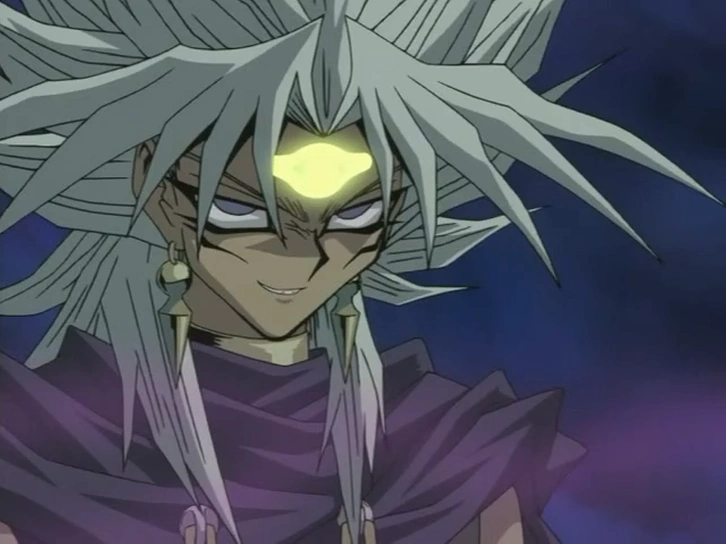Marik Ishtar is the main antagonist of the Battle City arc in the series. He is a member of the Ishtar family, who are the guardians of the Millennium Items. Marik possesses the Millennium Rod and has the ability to control other people's minds. He is also the leader of the Ghouls, a group of duelists who serve him and follow his orders. Marik is a cold and calculating individual who seeks to take control of the world using the power of the Millennium Items.